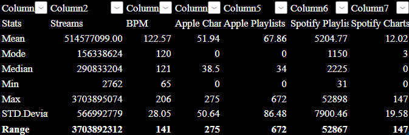

Instructions
To Display A Chart of your choosing, click on the bottons present
The dataset contains a list of songs popular on Spotify in 2023. It has approximately 954 rows and 24 columns. The dataset has qualitative data and quantitative data namely: track_name, artist(s)name, artist_count, released_year, released_month, released_day, in_spotify_playlists, in_spotify_charts, streams, in_apple_playlists, in_apple_charts, in_deezer_playlists, in_deezer_charts, in_shazam_charts, bpm, key, mode, danceability%, valence_%, energy_%, acousticness_%, instrumentalness_%, liveness_% and speechiness_%.
Excel was used to clean the dataset by importing it, finding and removing duplicates where necessary, taking care of Missing Values, Converting Data Types, and Finding and Removing confusing Characters in text.
For the descriptive statistics the data’s mean, mode, median, min, max and the standard deviation for the columns stream, BPM, Apple charts, Apple playlists, sportify playlists, and the Spotify chats, as shown below.

To Display A Chart of your choosing, click on the bottons present
The machine leaning part was done in python to train the model to make predictions for the number of steams given the number of playlists a singer has with regards to the actual song. As shown in the diagram below:

The model shows that the Total Streams increase steadily with the Number of Spotify Playlists.
This dataset was collected from the Spotify Songs 2023, and it shows music streamed across platforms like Spotify and Apple jus to mention the data.
It was downloaded as a csv file, imported into excel file and checked for errors like duplicates, blank spaces and unnecessary characters.
The statistics like mean, mode max, min, median and standard deviation were calculated to analyse numerical data like streams, chats and playlists.
Charts and graphs like the column, bar graph and line graph were used to analyse the relationships between the columns of data.
Collecting data is a good as it brings light to certain information. However, there are some ethical issues and limitations that occur like numerous biases,
privacy issues and legal restrictions. Keeping that in mind it is important to collect a wide range of data considering the ethical concerns.